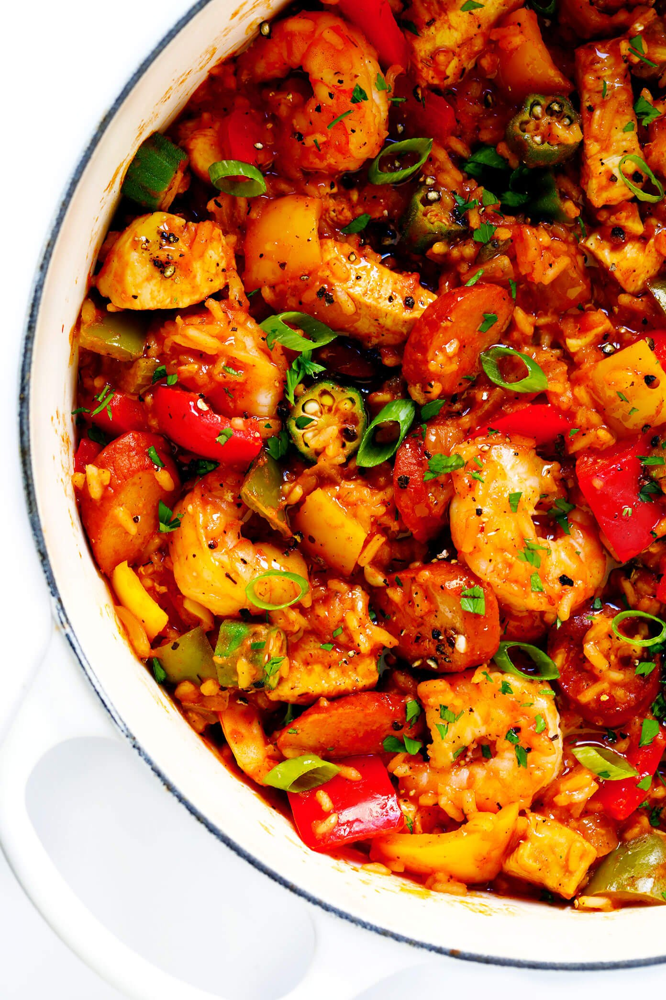

Jambalaya

A classic cajun dish sure to be a hit!
Hands-down the best jambalaya recipe! It is surprisingly easy to make, customizable with your favorite proteins (I used chicken, shrimp and Andouille sausage), and full of bold, zesty, Cajun flavors that everyone will love.
Ingredients
- 3 tablespoons olive oil, divided
- 2 boneless skinless chicken breasts, cut into bite-sized pieces
- 1 pound andouille sausage, thinly sliced into rounds
- 3 small bell peppers, cored and diced
- 2 ribs celery, diced
- 1 jalapeño pepper, seeded and finely chopped
- 1 white onion, diced
- 4 cloves garlic, peeled and minced
- 1 (14-ounce) can crushed tomatoes
- 3–4 cups chicken stock
- 1 1/2 cups uncooked long grain white rice
- 2 tablespoons Cajun seasoning or Creole seasoning
- 1 teaspoon dried thyme, crushed
- 1/4 teaspoon cayenne pepper
- 1 bay leaf
- 1 pound raw large shrimp, peeled and deveined
- 1 cup thinly-sliced okra
Directions
- Heat 1 tablespoon oil in a stock pot (or a very large, deep sauté pan) over medium-high heat. Add the chicken and sausage and sauté for 5-7 minutes, stirring occasionally, until the chicken is cooked through and the sausage is lightly browned. Transfer to a clean plate and set aside.
- Add the remaining 2 tablespoons oil to the stock pot. Add bell peppers, celery, jalapeño, onion and garlic. Sauté for 6 minutes, stirring occasionally, until the onions are softened.
- Add the crushed tomatoes, chicken stock, rice, Cajun seasoning, thyme, cayenne, bay leaf, and stir to combine. Continue cooking until the mixture reaches a simmer. Then reduce heat to medium-low, cover and simmer for about 25-30 minutes, or until the rice is nearly cooked through, stirring every 5 minutes or so along the way so that the rice does not burn.
- Add the shrimp, okra, and stir to combine. Continue to simmer, stirring occasionally, until the shrimp are cooked through and pink. Stir in the chicken and sausage, and remove and discard the bay leaf.
- Taste season the jambalaya with salt, pepper, and additional Cajun seasoning if needed. (I typically add about 2 teaspoons salt and 1/2 teaspoon pepper.) Remove from heat.